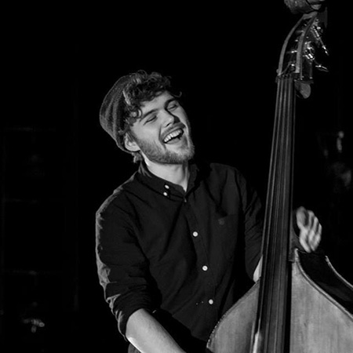
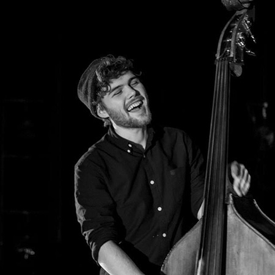

Clara
Sangskrivning
Den aarhusianske singer/songwriter Clara gik på Frontsession i 2017. Sidenhen har hun vundet Danish Music Awards i 2019 som “Årets Nye Danske Navn”.

Den aarhusianske singer/songwriter Clara gik på Frontsession i 2017. Sidenhen har hun vundet Danish Music Awards i 2019 som “Årets Nye Danske Navn”.
Den aarhusianske singer/songwriter Hugo gik på Frontsession i 2017. Hans debutsingle "Please Don't Lie", blev den mest spillede danske sang på dansk radio i 2017.
AySay, Total Hip Replacement, Døssing
Aske er med i flere bands som percussionist/trommeslager og producer. Linjen Roots and Hybrid tager stor inspiration fra AySays musik og udtryk. I 2022 vandt Aysay “Årets Roots Navn” til Danish Music Awards.
 

Abekejser, Clapper, Karmen Roivassepp Quartet
Efter Frontsession tog bassisten Adrian en bachelor samt Nordic Master in Jazz fra Det Jyske Musik Konservatorium. Nu er han actual i flere jazz quartetter og bands.